Mecánica Celeste
De las elipses de Kepler a la defensa planetaria: la gravedad como arquitecta del Sistema Solar, el zoológico de cuerpos menores que ella ordena (asteroides, cometas, transneptunianos) y las fuerzas sutiles —fotones incluidos— que terminan decidiendo si un asteroide nos visita o no.
Una sola fórmula, la ley de gravitación universal, basta para coreografiar todo lo que da vueltas en el Sistema Solar: planetas, asteroides, cometas, sondas espaciales. Esta clase recorre esa coreografía en tres actos. Primero, las reglas del movimiento: las tres leyes empíricas de Kepler y el modelo analítico de Newton que las explica. Segundo, el censo de los cuerpos que obedecen esas reglas: la definición de planeta de 2006, los planetas enanos y la fauna de pequeños cuerpos —cinturón de asteroides, troyanos, cometas, objetos transneptunianos, un hipotético Planeta 9 y hasta visitantes de otras estrellas. Tercero, las consecuencias prácticas: cómo robarle energía a un planeta para viajar barato (gravedad asistida), con qué frecuencia nos cae algo encima (impactos, Apophis, DART) y por qué la luz misma —presión de radiación, Poynting–Robertson, Yarkovsky, YORP— introduce la incertidumbre que la gravedad no tiene.
La gravedad: una fuerza, todo el sistema
La misma atracción que siente un paracaidista gobierna a los planetas.
El punto de partida de la clase es engañosamente simple: una única ley describe la atracción entre cualquier par de masas del universo. Es atractiva (el signo menos), apunta a lo largo de la línea que une los cuerpos (el vector unitario ) y decae con el cuadrado de la distancia:
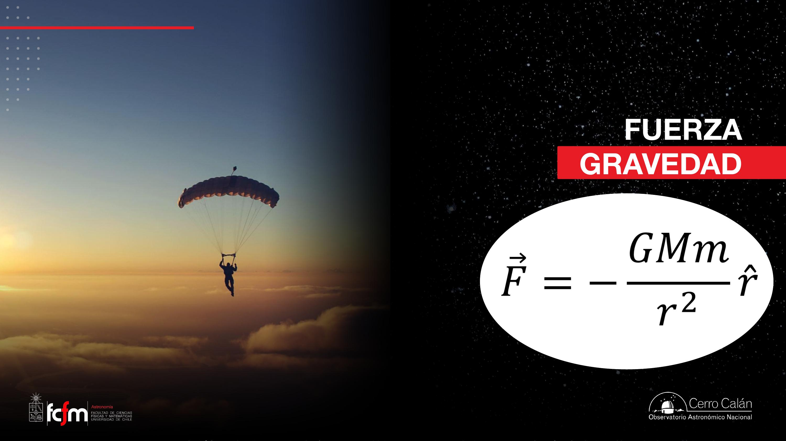
Para un ingeniero, la ley es vieja conocida: es la misma ley del cuadrado inverso de la intensidad de una señal que se propaga en 3D (una antena isotrópica, la iluminancia de una ampolleta). En ambos casos la razón geométrica es idéntica: algo que se conserva (flujo, «líneas de campo») se reparte sobre una esfera de área . Gravedad y enlaces de radio comparten el mismo path loss.
La clase apoya esta idea con animaciones del sistema solar interior, medio y exterior (Minor Planet Center): al ver miles de asteroides y cometas moviéndose durante años, todos respetando la misma ley, la fórmula deja de ser abstracta y se vuelve una maquinaria visible.
Las tres leyes de Kepler
Tres regularidades empíricas destiladas de décadas de datos observacionales.
Antes de Newton, Johannes Kepler (1571–1630) encontró tres patrones en las posiciones planetarias medidas por Tycho Brahe. Son leyes empíricas: describen «qué pasa» sin explicar «por qué». En lenguaje moderno:
- 1.ª ley: las órbitas son elipses, con el Sol en uno de los focos.
- 2.ª ley: la línea Sol–planeta barre áreas iguales en tiempos iguales.
- 3.ª ley: «el cubo de la distancia es igual al cuadrado del período»: (con en años y en unidades astronómicas).
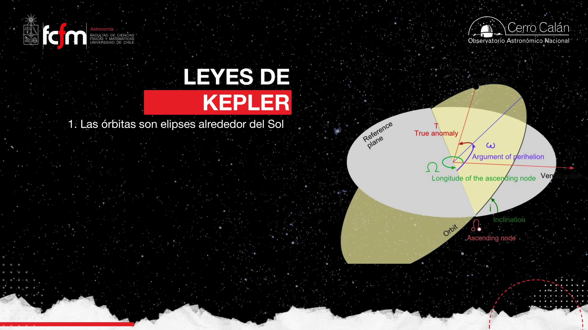
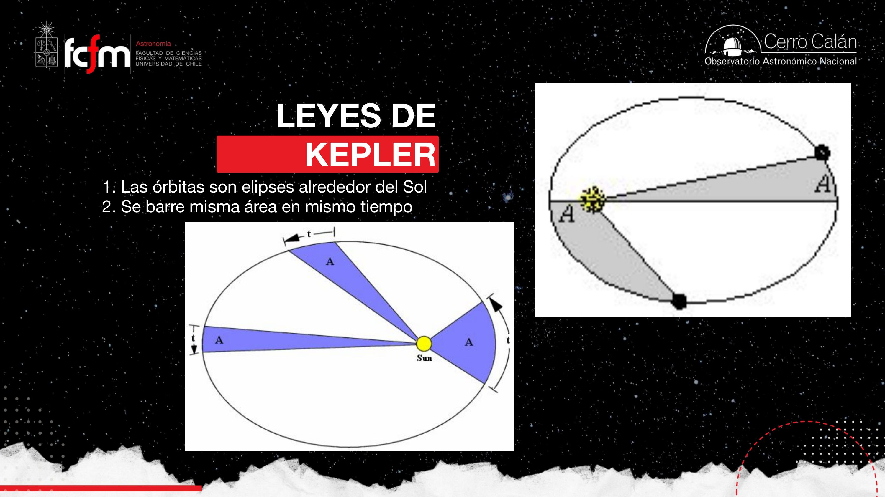
La segunda ley es, en el fondo, conservación del momento angular: como la gravedad apunta siempre hacia el Sol, no ejerce torque, y se mantiene constante. Si baja, sube — la patinadora que recoge los brazos y gira más rápido. Un cometa en el perihelio es la patinadora con los brazos pegados al cuerpo.
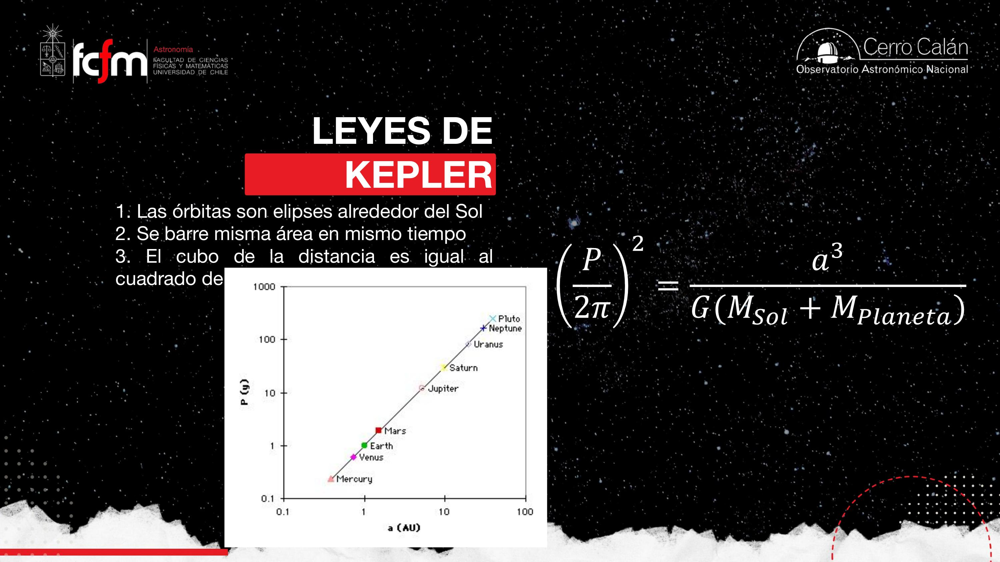
Newton: el modelo analítico y la órbita
De tres reglas empíricas a un teorema: la gravitación explica a Kepler.
Isaac Newton (1643–1727) proporcionó el modelo analítico para las leyes observacionales de Kepler: aplicando con la fuerza , las tres leyes se deducen matemáticamente. Las órbitas resultan ser cónicas (elipses si están ligadas), el momento angular se conserva (2.ª ley) y la tercera ley aparece con una corrección importante: la masa.
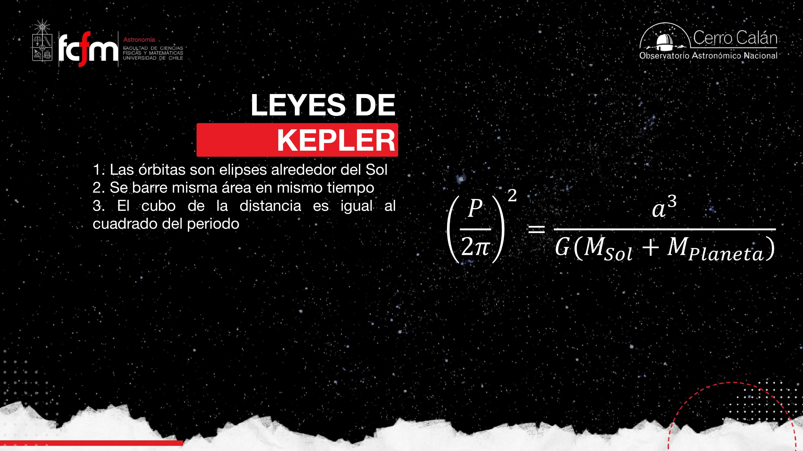
Kepler vs. Newton es la diferencia entre un ajuste empírico (curva que describe los datos) y un modelo de caja blanca (ecuaciones diferenciales con parámetros físicos). El ajuste interpola; el modelo extrapola y permite diseñar: sin la forma newtoniana no se podría planificar una trayectoria de nave espacial ni inferir la masa de un cuerpo que jamás hemos visitado.
Velocidad a lo largo de la órbita: la ecuación vis-viva
De la conservación de la energía en el problema de dos cuerpos sale una fórmula muy útil (no aparece explícita en las diapositivas, pero condensa las leyes 1 y 2; la marcamos como inferencia propia de apoyo):
¿Qué es un planeta? La definición de 2006
Tres criterios que clasifican todo lo que orbita al Sol en tres categorías.
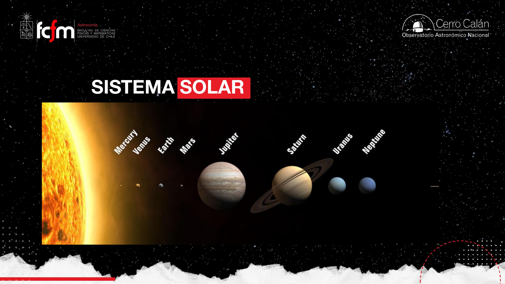
Desde 2006 (asamblea de la IAU en Praga), un planeta del Sistema Solar debe cumplir tres criterios:
- Orbita al Sol (no a otro cuerpo: las lunas quedan fuera).
- Tiene suficiente masa para que su autogravedad venza la rigidez del material y lo lleve a una forma de equilibrio (hidrostático): es decir, es esférico.
- Ha limpiado el vecindario alrededor de su órbita: domina gravitacionalmente su zona.
Los tres criterios generan una clasificación completa: quien cumple los tres es planeta; quien cumple los dos primeros pero no limpió su órbita es planeta enano (Plutón, Eris, Ceres, Haumea, Makemake); quien solo cumple el primero es un pequeño cuerpo del Sistema Solar (asteroides, cometas, la mayoría de los transneptunianos).
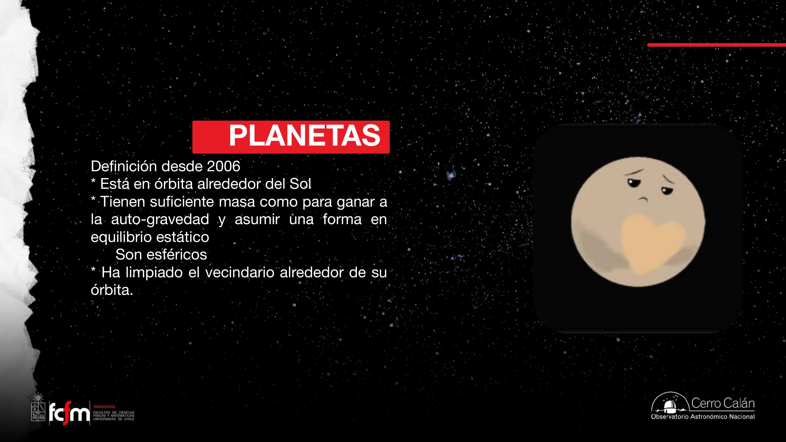
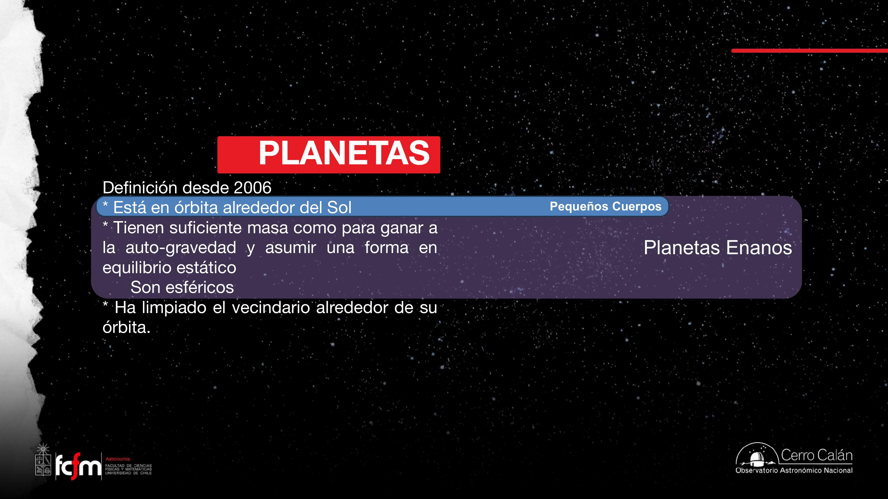
En la parte final de la clase (registrada en la transcripción) el profesor recuerda que Eris fue el objeto que «llegó a romper la fiesta»: al descubrirse (2005) un cuerpo transneptuniano comparable a Plutón, mantener a Plutón como planeta habría obligado a admitir decenas de nuevos planetas. La definición de 2006 zanjó el problema creando la categoría «planeta enano».
En un cuerpo chico (un asteroide de 10 km) la resistencia del material —fuerzas electromagnéticas entre átomos— le gana a la autogravedad, y el objeto conserva forma de papa. Al crecer la masa, la presión gravitacional supera la rigidez de la roca y el cuerpo «fluye» hasta la única forma en que un fluido autogravitante está en equilibrio: la esfera. El umbral ronda los cientos de kilómetros de diámetro, dependiendo del material.
Asteroides: cinturón, resonancias y troyanos
Entre Marte y Júpiter vive una población estructurada, no un enjambre al azar.
El cinturón principal de asteroides ocupa la franja entre ~2,1 y ~3,3 UA, entre las órbitas de Marte y Júpiter. Visto en el plano semieje mayor–inclinación, el cinturón no es una nube uniforme: tiene huecos verticales y grumos.
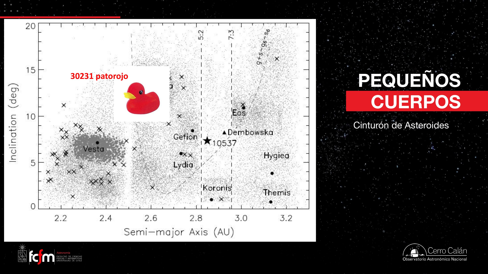
Un asteroide cuyo período es una fracción entera simple del de Júpiter (2:1, 5:2, 7:3…) recibe el tirón del gigante siempre en el mismo punto de su órbita. Es como empujar un columpio en fase: perturbaciones diminutas se acumulan hasta expulsarlo de esa zona. Para un ingeniero: forzamiento periódico en resonancia ⇒ crecimiento secular de la amplitud. Así se vacían los huecos de Kirkwood.
Además del cinturón, hay asteroides que comparten órbita con Júpiter: los troyanos, agrupados en torno a los puntos de Lagrange L4 y L5 (60° por delante y por detrás del planeta). El nombre viene de la guerra de Troya: cada grupo lleva nombres del bando griego o troyano.
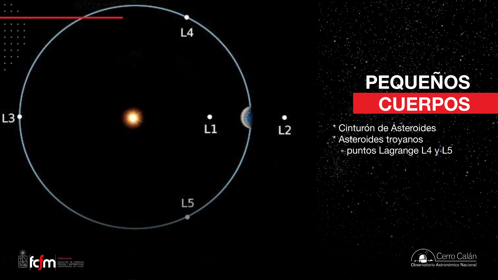
Cometas: Kuiper, Oort y la misión Rosetta
Hielo primitivo que viene de los dos congeladores del Sistema Solar.
Un cometa es, en esencia, una bola de hielo y polvo de unos pocos kilómetros. Su espectáculo aparece al acercarse al Sol: el hielo sublima y forma una estructura enorme y jerárquica.
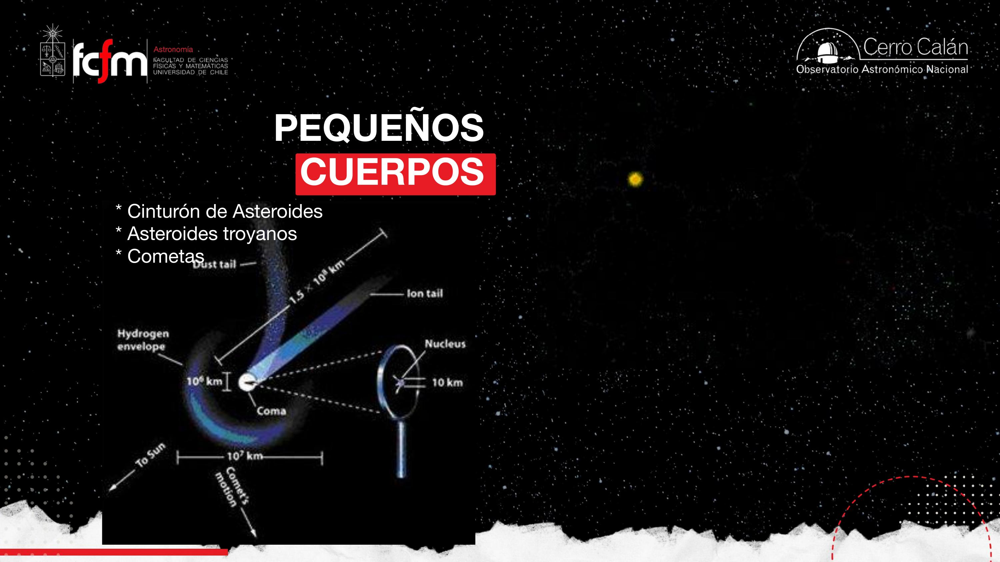
¿De dónde vienen? La mayoría vive más allá de los planetas, en dos reservorios:
- Cinturón de Kuiper (~30–50 UA): disco más allá de Neptuno; origen de los cometas de período corto.
- Nube de Oort (5 000–100 000 UA): cascarón esférico en el borde gravitacional del Sistema Solar; origen de los cometas de período largo, que llegan desde cualquier dirección.
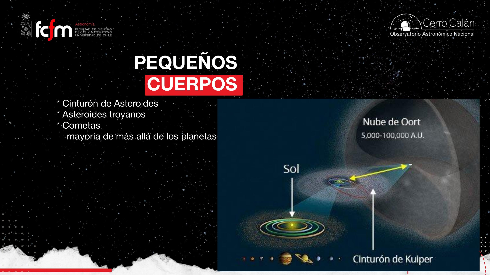
Los cometas pasan casi toda su vida lejos del Sol, a temperaturas bajísimas: son material primitivo congelado, testigos casi intactos de la formación del Sistema Solar (transcripción: «los cometas son muy interesantes para traer información del pasado»). Analizarlos es hacer arqueología de hace 4 600 millones de años.
El ejemplo estrella de la clase es la misión Rosetta (ESA): perseguir, orbitar y aterrizar (módulo Philae) en el cometa 67P/Churyumov-Gerasimenko. El problema de ingeniería: el cometa viene con una energía orbital enorme comparada con la de la Tierra, y alcanzarlo a punta de combustible sería carísimo. La solución conecta con la sección siguiente.
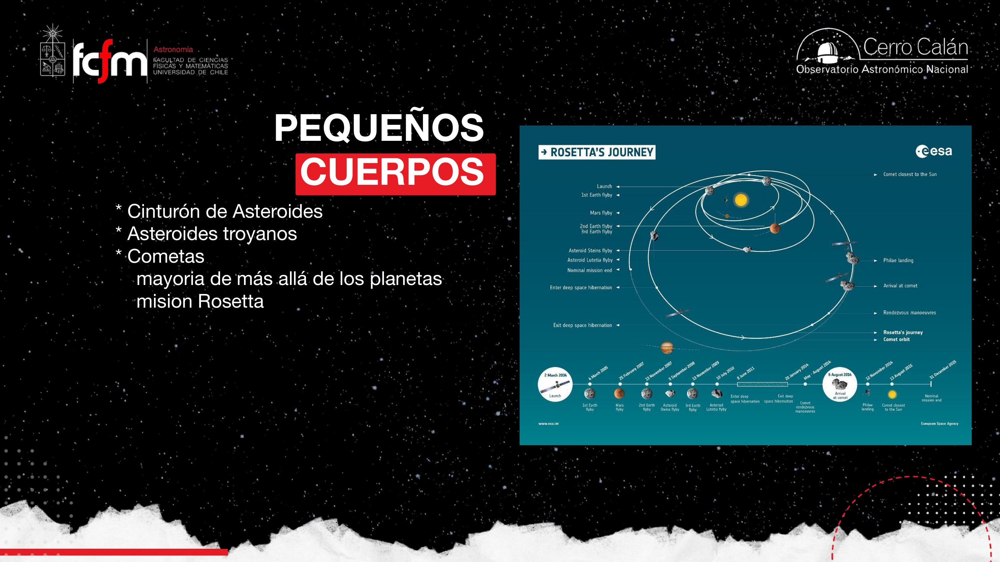
Gravedad asistida: viajar robando energía
La técnica que abarata todas las misiones interplanetarias modernas.
La gravedad asistida consiste en pasar cerca de un planeta para quitarle (o darle) energía orbital. En la interacción gravitacional, la nave sale con más velocidad respecto al Sol y el planeta pierde exactamente esa energía… pero como su masa es ~10²⁰ veces mayor, «no se da ni cuenta» (transcripción). Es una colisión elástica sin contacto: la misma física de una pelota que rebota contra un camión en movimiento y sale disparada.
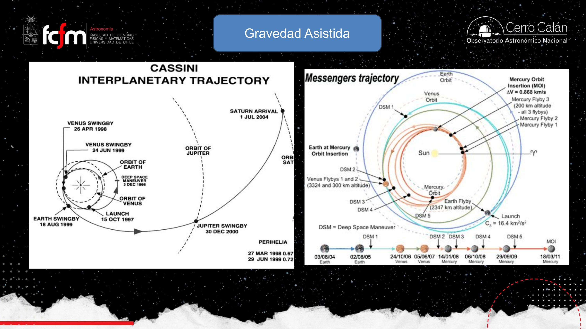
En el marco del planeta, la rapidez de la nave entra y sale igual (interacción elástica). Pero al volver al marco del Sol se le suma la velocidad del planeta: en el caso ideal de «rebote» frontal, la nave sale con . Con Júpiter ( km/s) el regalo puede superar los 20 km/s de delta-v gratis — más de lo que da un cohete completo.
El costo de la gravedad asistida es el tiempo: Cassini tardó 7 años en llegar a Saturno; «podríamos llegar en dos meses, pero a un costo gigantesco de combustible». Para robots el trato es perfecto («los robots no necesitan psicólogo»); para humanos habría que acortar el viaje quemando mucho más combustible, con el riesgo adicional que este implica.
Diseñar una trayectoria con múltiples flybys es un problema de optimización combinatoria con ventanas de lanzamiento: minimizar delta-v (combustible) sujeto a restricciones de tiempo y alineación planetaria. Es el mismo tipo de trade-off costo/latencia que se resuelve en logística o en scheduling — con la efeméride planetaria como calendario de recursos.
Transneptunianos y el Planeta 9
Más allá de Neptuno el censo sigue abierto — y hay una anomalía sin explicar.
Los objetos transneptunianos (TNOs) son todos los cuerpos con órbitas más allá de Neptuno. La clasificación es principalmente posicional/dinámica: plutinos (en resonancia 3:2 con Neptuno, como Plutón), cinturón de Kuiper clásico, disco disperso (órbitas excéntricas e inclinadas, como Eris) y centauros (entre Júpiter y Neptuno, población de transición).
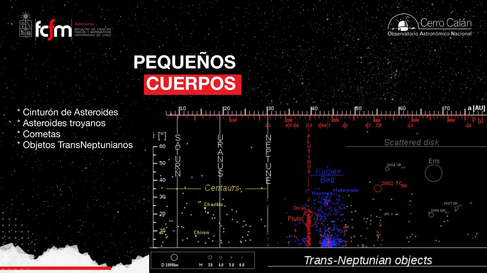
La anomalía: ¿un noveno planeta?
Los TNOs extremos más grandes (Sedna, 2012 VP113, 2004 VN112…) deberían tener sus perihelios orientados al azar. Pero no: apuntan todos hacia el mismo lado del cielo, dejando un sector vacío. Esa agrupación se explicaría si un cuerpo masivo orbitara en el lado opuesto, «pastoreando» gravitacionalmente esas órbitas.
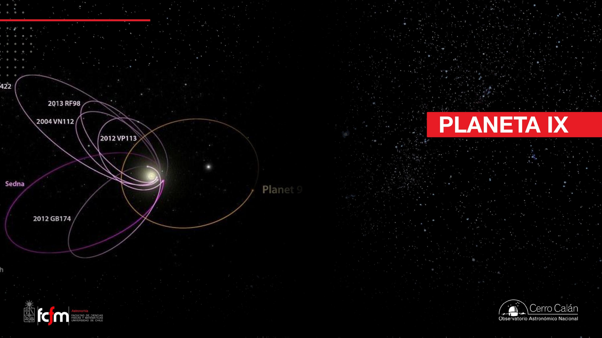
El argumento del Planeta 9 es detección por anomalía estadística: nadie vio el objeto, pero la distribución observada (perihelios agrupados) tiene probabilidad muy baja bajo la hipótesis nula (azar). Es el mismo razonamiento con que se descubrió Neptuno (residuos en la órbita de Urano) o con que se detectan fallas en un sistema por sus síntomas correlacionados. El riesgo también es clásico: sesgo de observación — quizás miramos más ese sector del cielo.
Visitantes interestelares
Cuerpos que no son del Sistema Solar: entran, saludan y se van para siempre.
Todos los cometas «nuestros» —de Kuiper o de Oort— tienen órbitas cerradas (elipses, ): son periódicos, vuelven. Pero a veces se detecta un objeto en órbita hiperbólica (, energía orbital positiva): no está ligado al Sol, viene de fuera del Sistema Solar y no volverá. Son los visitantes interestelares.
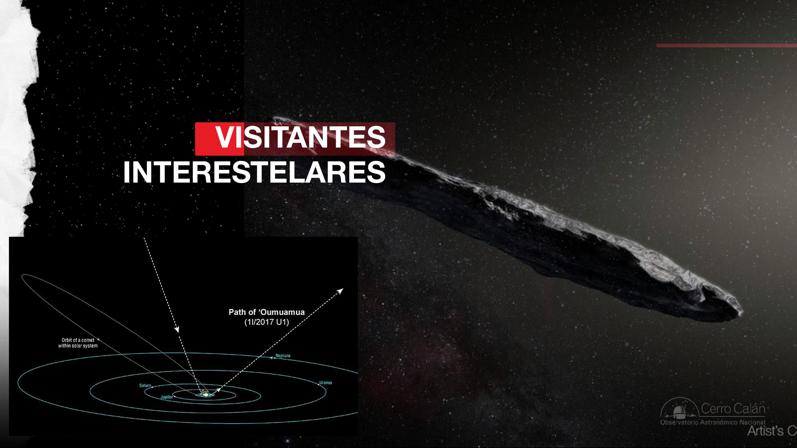
En términos de vis-viva: si la velocidad a distancia supera la velocidad de escape , la energía total es positiva y la cónica es una hipérbola. Medir posición y velocidad unas pocas veces basta para saber si el objeto es «de la casa» o va de paso: es un problema de estimación de estado con seis incógnitas (los elementos orbitales).
Impactos: cuándo y cuánto
Una ley de potencia gobierna la estadística: chico y frecuente, grande y raro.
Con miles de cuerpos cruzando el vecindario terrestre, los impactos no son una posibilidad: son una certeza estadística. La evidencia está en los cráteres de la Luna y de la Tierra. La pregunta correcta no es «¿va a caer algo?» sino «¿de qué tamaño y cada cuánto?». La respuesta es una ley de potencia: la frecuencia de impacto cae rápidamente con el tamaño del proyectil.
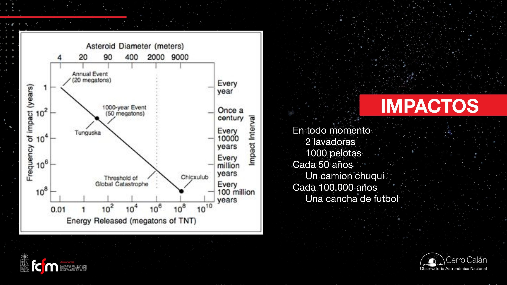
- ~20 cm (pelotas, a diario): se destruyen en la atmósfera; nadie las nota.
- ~4 m (todos los años): bólidos brillantes; rara vez llega algo a superficie.
- Decenas de metros (cada siglo): Tunguska (1908, ~20 megatones) y Chelyabinsk (2013, ~500 kilotones), ambos en Rusia. Como referencia de la clase: la bomba de Hiroshima fue de 16 kilotones.
- ~10 km (cada ~100 millones de años): Chicxulub, «un Santiago cayendo del cielo»: catástrofe global, extinción masiva. El último fue hace ~66 millones de años.
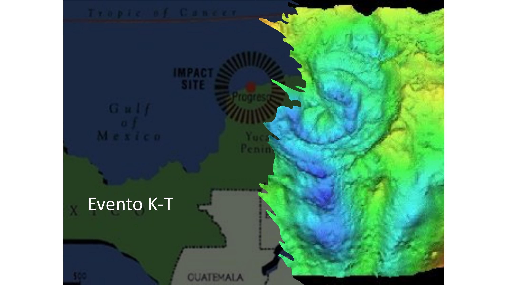
La fricción atmosférica calienta el proyectil a cientos de grados. Si contiene volátiles (hielo de agua), el cambio de fase sólido→gas multiplica el volumen bruscamente: el objeto explota en el aire (airburst, como Tunguska y Chelyabinsk). Un cuerpo de hierro o roca compacta, en cambio, aguanta y llega al suelo. Detalle contraintuitivo: una explosión en la atmósfera puede ser más dañina que una en superficie, porque su onda expansiva se propaga en los 360°, sin que el suelo absorba la mitad de la energía.
Que Tunguska y Chelyabinsk cayeran ambos en Rusia parece «ganarse la lotería dos veces». La sospecha discutida en clase: ambos provendrían de una misma población/familia de asteroides cuya geometría orbital favorece esas latitudes. Es una pista, no una certeza; con las órbitas mejor medidas quizás algún día se pueda pronosticar de qué familia vendrá el próximo.
PHAs, Apophis y defensa planetaria
Monitorear con tiempo es la única defensa que funciona.
Los PHA (Potentially Hazardous Asteroids, asteroides potencialmente peligrosos) se definen por un criterio arbitrario pero práctico: todo objeto cuya órbita se acerque a menos de ~20 veces la distancia Tierra–Luna entra a una lista de monitoreo permanente. No significa que vayan a impactar: significa que vale la pena vigilarlos.
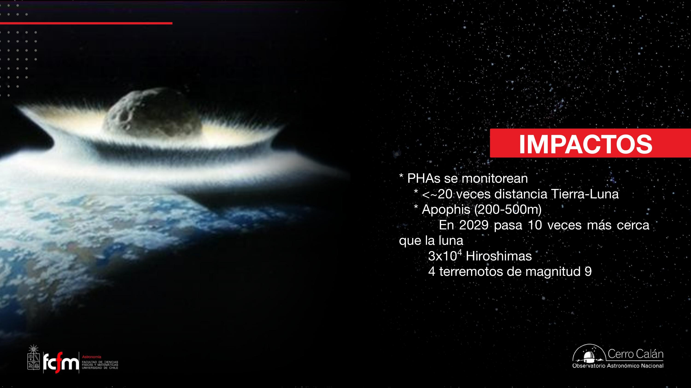
Lejos de ser una amenaza, la pasada de 2029 tiene «a los astrónomos vueltos locos» de entusiasmo: un asteroide de cientos de metros observable con detalle desde la Tierra, algo irrepetible. La transcripción menciona además una probabilidad residual baja (~1%) de impacto en horizontes de siglos, asociada a pasadas futuras — y la sección 12 explica de dónde viene esa incertidumbre (spoiler: no es la gravedad).
¿Y si uno viene de verdad? Desviar, no destruir
- Fragmentarlo al estilo Hollywood no sirve: si todos los pedazos siguen viniendo, la energía total depositada en la Tierra es la misma; solo se reparte en muchos impactos.
- La estrategia real es el desvío temprano: empujar «un poquito» (impactador cinético, motor, espejo que sublime material). Una fracción de grado de cambio en la órbita, aplicada con décadas de anticipación, se amplifica hasta convertir un impacto en un paso inofensivo.
- Sin tiempo no hay defensa: si se descubre un impactador a menos de ~1 año, «no hay absolutamente nada que hacer». Por eso el monitoreo (la lista PHA) es la primera línea de defensa.
Un cambio de velocidad aplicado hoy desplaza la posición futura aproximadamente como (y en órbitas incluso crece más rápido, porque cambia el período). Con mm/s y 20 años de plazo: km — del orden del radio de la zona de impacto. Empujón diminuto + palanca temporal larga = defensa viable.
En clase se mencionó la misión DART (NASA, 2022) como prueba de concepto de impactador cinético contra Dimorphos, la luna del asteroide binario Didymos (el docente no recordaba el resultado). Dato externo verificado: DART sí funcionó — acortó el período orbital de Dimorphos en ~32–33 minutos, muy por encima del mínimo de éxito (73 s). Fue elegir un binario precisamente para medir el efecto con facilidad (cambio del período de la «lunita») sin alterar la órbita del sistema alrededor del Sol. Fuente: NASA/JHUAPL, resultados publicados en Nature (2023). Nivel: introductorio.
Fuerzas no gravitacionales: el empuje de la luz
El fotón tiene momento: para cuerpos chicos, la luz también es dinámica orbital.
«Gravedad principalmente, pero no únicamente» — así cierra la clase. El fotón no tiene masa, pero sí momento: la luz empuja. Para la Tierra o Júpiter el efecto es despreciable, pero para cuerpos pequeños se vuelve decisivo. Cuatro efectos, ordenados por el tamaño del cuerpo que afectan:
| Efecto | Tamaño típico | Qué hace |
|---|---|---|
| Presión de radiación | < 1 mm (polvo) | Empuja hacia afuera: el flujo de fotones solares barre las partículas submilimétricas |
| Poynting–Robertson | ~µm–cm | Frena la partícula en órbita y la hace caer en espiral hacia el Sol |
| Yarkovsky | ~m–km | Acelera o frena el cuerpo según su rotación e inercia térmica: deriva lenta del semieje mayor |
| YORP | ~m–km, forma irregular | Aplica torque: cambia la velocidad y el eje de rotación, lo que a su vez modula a Yarkovsky |
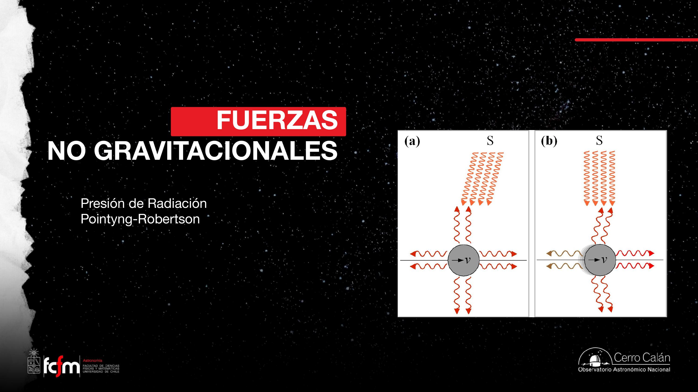
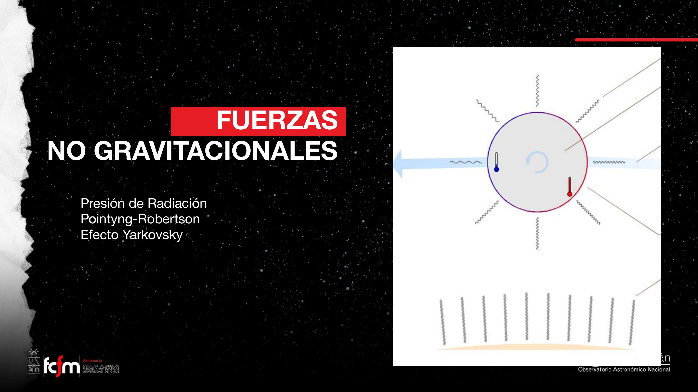
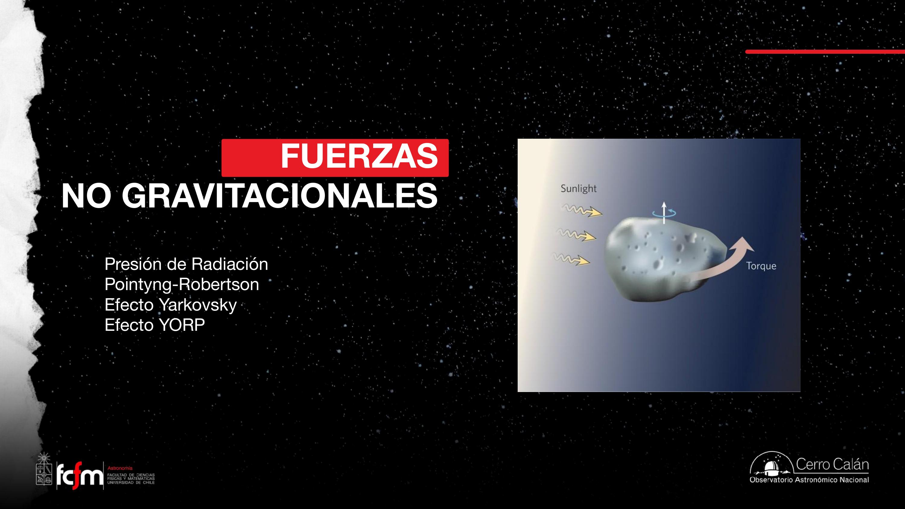
La órbita gravitacional de Apophis se puede propagar «con ultra precisión hasta mil años» — la gravedad es determinista. La incertidumbre real de si nos rozará en horizontes de siglos viene del efecto Yarkovsky: la deriva térmica depende de la rotación (que YORP va cambiando) y de la disposición de cada roca de su superficie. Es un caso de libro de presupuesto de error: el término dominante no es el modelo principal, sino una perturbación de segundo orden difícil de caracterizar.
Piénselo como ruido y deriva en un integrador: la gravedad es la dinámica nominal (integrable, predecible); las fuerzas de radiación son perturbaciones pequeñas pero seculares — con sesgo constante que se acumula con el tiempo, como el drift de un giroscopio. En horizontes cortos son invisibles; en horizontes de siglos dominan el error de predicción.
Mensaje final de la clase: la gravedad manda, pero no gobierna sola — el fotón mueve el polvo, arrastra partículas, deriva asteroides y decide incertidumbres de defensa planetaria. La próxima clase del módulo: la Tierra como planeta, y luego superficies y atmósferas planetarias.
Conceptos clave
Tabla de repaso rápido.
| Concepto | Qué es / valor | Por qué importa |
|---|---|---|
| Gravitación universal | Una sola ley ordena todo el Sistema Solar; sin escala privilegiada | |
| 1.ª ley de Kepler | Órbitas elípticas, Sol en un foco | Geometría de toda órbita ligada |
| 2.ª ley de Kepler | Áreas iguales en tiempos iguales | Conservación del momento angular: rápido en perihelio |
| 3.ª ley de Kepler | (años, UA); Newton: | Convierte distancia↔período y sirve de balanza de masas |
| Definición de planeta (2006) | Orbita al Sol + esférico + limpió su vecindario | Genera 3 categorías: planeta, planeta enano, pequeño cuerpo |
| Cinturón de asteroides | ~2,1–3,3 UA; huecos de Kirkwood (5:2, 7:3) | Las resonancias con Júpiter esculpen la población |
| Troyanos / L4, L5 | Asteroides en los puntos de Lagrange estables | Equilibrio de 3 cuerpos; comparten órbita con Júpiter |
| Cometa | Núcleo ~10 km; coma ~10⁶ km; colas ~10⁸ km | Material primitivo congelado; Rosetta/67P lo visitó |
| Kuiper vs Oort | Disco a 30–50 UA vs cascarón a 5 000–100 000 UA | Reservorios de cometas de período corto y largo |
| Gravedad asistida | Flyby que roba energía orbital al planeta | Delta-v gratis: Cassini (7 años a Saturno), Rosetta, MESSENGER |
| TNO | Objeto más allá de Neptuno (plutinos, disco disperso…) | Censo abierto; Eris forzó la redefinición de planeta |
| Planeta 9 | Hipotético; masa entre Tierra y Neptuno | Explicaría el agrupamiento de perihelios de TNOs extremos |
| Visitante interestelar | Órbita hiperbólica (): 'Oumuamua | No ligado al Sol: entra y no vuelve |
| Ley tamaño–frecuencia | 4 m/año · Tunguska/siglo–milenio · 10 km/10⁸ años | Estadística de impactos; umbral global ~10⁶ Mt |
| PHA / Apophis | Acercamiento < ~20 distancias lunares; Apophis 2029 a ~1/10 d. lunar | Lista de monitoreo; defensa = desvío con décadas de anticipación |
| DART | Impactador cinético contra Dimorphos (2022) | Prueba de concepto de desvío; −33 min de período (dato externo) |
| Presión de radiación | Fotones empujan partículas < 1 mm hacia afuera | El fotón tiene momento: la luz es una fuerza |
| Poynting–Robertson | Aberración de la luz frena partículas en órbita | El polvo cae en espiral hacia el Sol |
| Yarkovsky / YORP | Emisión térmica asimétrica: deriva orbital / torque rotacional | Fuente dominante de incertidumbre en órbitas de asteroides (Apophis) |
Exámenes de práctica
10 exámenes de 5 preguntas (3 de alternativas autocorregibles + 2 de respuesta escrita).